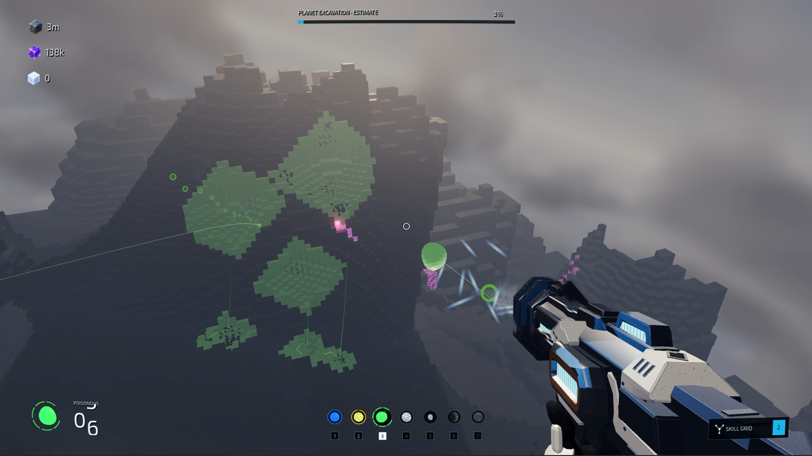
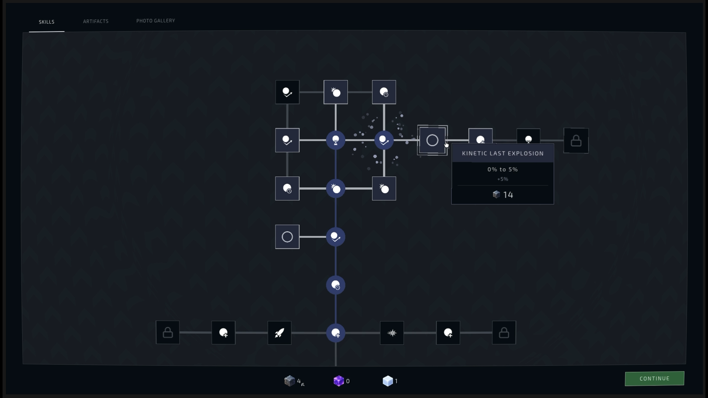
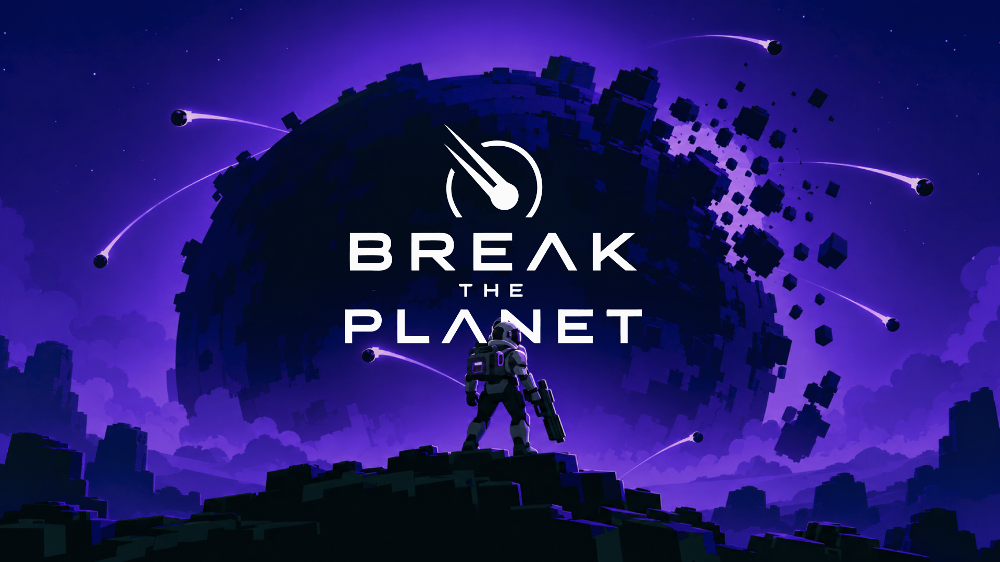
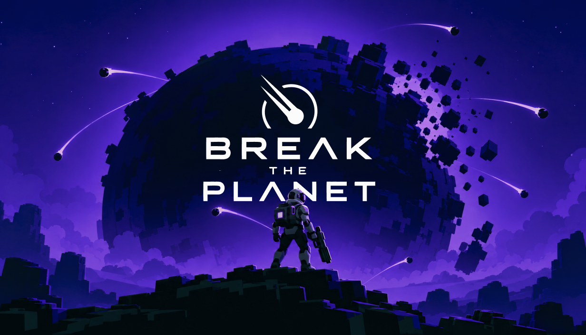
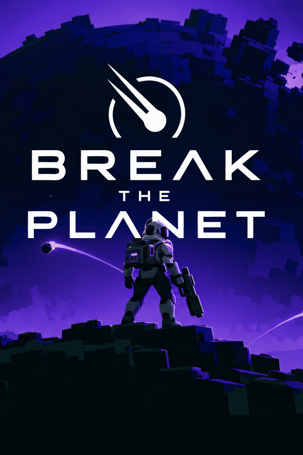
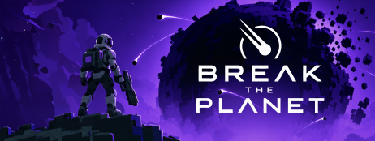

SNEKKERS GAMES / PRESS KIT
Break the Planet
A satisfying, meditative incremental game about shooting balls and breaking planets.

01 / AT A GLANCE
Factsheet
- Developer & publisher
- Snekkers Games
- Platforms
- Not announced
- Release status
- In development
- Release date
- Q1 2027
- Genres
- Incremental
- Price
- To be announced
- Website
- snekkersgames.com
02 / THE GAME
Descriptions
Pitch
A satisfying, meditative incremental game about shooting balls and breaking planets.
Description
A satisfying, meditative incremental game about shooting balls to destroy planets. Find the white voxel hidden in each world, unlock more balls, and uncover the secrets to destroy a 10-billion-voxel planet.
Features
- Fire balls at procedurally generated planetsEvery planet is different. Shoot balls, break voxels, and slowly tear each world apart.
- Find the white voxel hidden in each planetEvery planet hides one white voxel. Break your way through the planet and find it to move on.
- Play with 7 different ball typesUnlock 7 unique ball types, each with its own way of destroying planets. Combine them and find the fastest way to break everything.
- Build your own skill treeSpend what you collect on a large, non-linear skill tree. Upgrade your balls, unlock new abilities, and shape each run differently.
- Grow stronger with every runEach run makes you stronger. Reset, unlock permanent upgrades, and work your way toward destroying the massive 10-billion-voxel planet.
- Uncover a hidden mysteryThere is more to the planets than destruction. Find hidden objects, strange structures, and clues that can lead you to the true ending.
03 / IN PICTURES
Media
Trailers
No public trailers yet.
Screenshots
Download ZIP · 13.3 MB Preview
Preview Preview
Preview Preview
Preview Preview
Preview Preview
Preview{kind=link}

Preview{kind=link}

Preview{kind=link}

Preview Preview
Preview Preview
Preview Preview
PreviewKey artwork
Download ZIP · 2.2 MB Preview{kind=link}

Preview{kind=link}

Preview{kind=link}

PreviewLogos
Download ZIP · 29 KB{kind=link}

Preview04 / GET IN TOUCH
Let’s talk Break the Planet.
For press enquiries, interviews, review access, or additional assets.
info@snekkersgames.com